1. 每一个事物都是由于它是一个单位而存在的，这个单位叫做一．
2. 一个数是由许多单位合成的．
3. 一个较小数为一个较大数的一部分，当它能量尽较大者[1]．
4. 一个较小数为一个较大数的几部分，当它量不尽较大者[2]．
5. 较大数若能为较小数量尽，则它为较小数的倍数．
6. 偶数是能被分为相等两部分的数．
7. 奇数是不能被分为相等两部分的数，或者它和一个偶数相差一个单位．
8. 偶倍偶数是用一个偶数量尽它得偶数的数[3]．
9. 偶倍奇数是用一个偶数量尽它得奇数的数．
10. 奇倍奇数是用一个奇数量尽它得奇数的数．
11. 素数是只能为一个单位所量尽者．
12. 互素的数是只能被作为公度的一个单位所量尽的几个数．
13. 合数是能被某数所量尽者．
14. 互为合数的数是能被作为公度的某数所量尽的几个数．
15. 所谓一个数乘一个数，就是被乘数自身相加多少次而得出的某数，这相加的个数是另一数中单位的个数．
16. 两数相乘得出的数称为面数，其两边就是相乘的两数．
17. 三数相乘得出的数称为体数，其三边就是相乘的三数．
18. 平方数是两相等数相乘所得之数，或者是由两相等数所构成的．
19. 立方数是两相等数相乘再乘此等数而得的数，或者是由三相等数所构成的．
20. 当第一数是第二数的某倍、某一部分或某几部分，与第三数是第四数的同一倍、同一部分或相同的几部分，称这四个数是成比例的[4]．
21. 两相似面数以及两相似体数是它们的边成比例的数．
22. 完全数是等于它自身所有部分的和的数[5]．
命题1 设有不相等的二数，若依次从大数中不断地减去小数，若余数总是量不尽它前面一个数，直到最后的余数为一个单位，则该二数互素．
设有不相等的二数AB，CD，从大数中不断地减去小数，设余数总量不尽它前面一个数，直到最后的余数为一个单位．
则可证AB，CD是互素的，即只有一个单位量尽AB，CD.
因为，如果AB，CD不互素，则有某数量尽它们，设量尽它们的数为E.
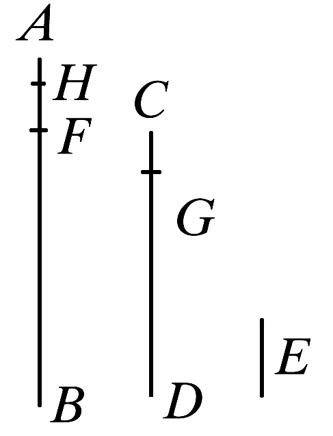
现在用CD量出BF，其余数FA小于CD.
又设AF量出DG，其余数GC小于AF，以及用GC量出FH，这时余数为一个单位HA.
于是，由于E量尽CD，且CD量尽BF，所以E也量尽BF.
因为E也量尽整体BA，所以它也量尽余数AF.
但是AF量尽DG，所以E也量尽DG.
然而E也量尽整体DC，所以它也量尽余数CG.
由于CG量尽FH，于是E也量尽FH.
但证得E也量尽整体FA，所以它也量尽余数，即单位AH，然而E是一个数；这是不可能的．
因此没有数可以同时量尽AB，CD，因而AB，CD是互素的．
［vii.定义12］
证完
应当在此处说明的是：在卷Ⅶ到卷Ⅸ中用线段来表示数的方式是海伯格（Heiberg）从原抄本中采用的，那些编者用点来代替线段的做法不甚妥当，因为在很多情形、尤其是需要使用具体数字时，这是有悖于欧几里得的行文方式的．
“设CD量出BF，剩下FA小于它自身”，这是一句简洁的缩写．原话是“以等于CD的长度，沿着BA不断地丈量，直到达到点F，使得剩下的长度FA小于CD”．换言之，“设BF是包含于BA之内的CD的最大倍数．”
在本命题中欧几里得的方法是求两个不互素的（整）数的最大公约数（G.C.M）［下一个命题中将见到］的方法对于互素特例的应用．用我们的符号，这个方法可表示如下．
设两数为a、b（a>b），则有
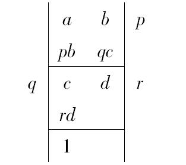
如果a，b不互素，则必有一公约数e，这是一个并非单位1的整数．
并且，因为e可量尽a，b，则也可量尽a-pb，即c；
又因为e可量尽b、c，则也可量尽b-qc，即d；
最后，因为e可量尽c，d，则也可量尽c-rd，即1；这是不可能的．
因此，除了单位1以外，没有任何别的整数可以量尽a，b，正是由于此，它们才是互素的．
请注意，欧几里得在此处还使用了一个公理即“若a，b二数都可被c量尽，则a-pb也可被c量尽”；在下一个命题他也使用了一个公理，“在所设情形下，c可量尽a+pb．”（即“若a，b二数都可被c量尽，则a+pb也可被c量尽．”）
命题2 已知两个不互素的数，求它们的最大公度数．
设AB，CD是不互素的两数．
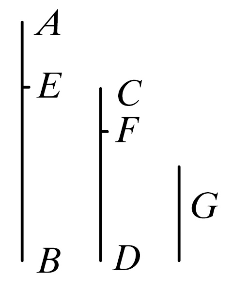
求AB，CD的最大公度数．
如果CD量尽AB，这时它也量尽它自己，
那么CD就是CD，AB的一个公度数．
且显然CD也是最大公度数，
这是因为没有比CD大的数能量尽CD.
但是，如果CD量不尽AB，那么从AB，CD中的较大者中不断地减去较小者，如此，将有某个余数能量尽它前面一个．
这最后的余数不是一个单位，否则AB，CD就是互素的， ［vii.1］
这与假设矛盾．
所以某数将是量尽它前面的一个余数．
现在设CD量出BE，余数EA小于CD，
设EA量出DF，余数FC小于EA，又设CF量尽AE.
这样，由于CF量尽AE，以及AE量尽DF，
所以CF也量尽DF.
但是它也量尽它自己，所以它量尽整体CD.
然而CD量尽BE，所以CF也量尽BE.
但是，CF也量尽EA，所以它也量尽整体BA.
然而，CF也量尽CD，所以CF量尽AB，CD.
所以，CF是AB，CD的一个公度数．
其次可证它也是最大公度数．
因为，如果CF不是AB，CD的最大公度数，那么必有大于CF的某数将量尽AB，CD.
设量尽它们的那样的数是G.
现在，由于G量尽CD，而CD量尽BE，那么G也量尽BE.
但是它也量尽整体BA，所以它也量尽余数AE.
但是，AE量尽DF，所以G也量尽DF.
然而它也量尽整体DC，所以它也量尽余数CF，即较大的数量尽较小的数：这是不可能的．
所以没有大于CF的数能量尽AB，CD.
因而CF是AB，CD的最大公度数．
推论 由此很显然，如果一个数量尽两数，那么它也量尽两数的最大公度数．
证完
此处我们有代数教科书中给出的求最大公约数的方法，其中涉及用反证法证明所得的数不仅是公约数，而且也是最大公约数，求最大公约数的过程如下：
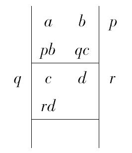
欧几里得说，最终可得到一个数，即d，它可以量尽它之前的数，也就是c=rd，否则，上述过程一直持续下去，直到得到单位1为止．这是不可能的，因为如果是这样的话，则a，b将互素，与假设矛盾．
其次，与代数教科书相似的是：他（欧几里得）接着证明d将是a，b的某个公约数：因为d可量尽c，因而也可量尽qc+d，即b．
因而也可量尽pb+c，即a．
最后，像下面那样，他证明“d是a、b的最大公约数”：
假设e是一个大于d的公约数．
那么，可量尽a，b的e必定可量尽a-pb，即c．
与此类似地，e也必定可整除b-qc，即d，而这是不可能的，因为由假设，e是大于d的．
这样，除了欧几里得的数是正整数以外，他的命题与通常给出的代数命题，比如托德亨特（Todhunter）的代数命题，是完全相同的．
尼克马科斯（Nicomachus）在说明如何判定二给定奇数互素与否，若不互素，如何求它们的公约数的过程中，也给出同样的法则（尽管没有对此作出证明）．他说：依次地对比两数，不断地从大数中减去小数．尽可能多次地减，［得出一个比这小数更小的余数；］又从原有的小数中，尽可能多次地减去这个余数，如此持续下去，这个过程“要么终止于一个单位，要么终止于某一相同的数”．这就隐含着大数被小数除的除法可通过对小数的减法来实现．因此，对于21和49，尼克马科斯说：“从大的中减去小的，剩下28，再从中减去21（因为这是可行的）；剩下7，又从21中减去这数（7），剩下14；再从中减去7（因为这也是可行的），将剩下7；但是7不能从7中减去．”最后一句很奇怪，不过意义已经显然，同样奇怪的还有结尾处的这一句：“要么终止于1，要么终止于某一相同的数．”
推论的证明当然包含在命题的证明中，一个与CF不同的公约数G一定可以量尽CF的那个部分的证明之中．G大于CF的假设并不会影响G在任何情形下可以量尽CF的论证的正确性，因此可以证明所作的假设“G大于CF”是不真实的．
命题3 已知三个不互素的数，求它们的最大公度数．
设A，B，C是已知三个不互素的数．
我们来求A，B，C的最大公度数．
设D为两数A，B的最大公度数． ［vii.2］
那么D或者量尽或者量不尽C.
首先设D量尽C.
但是它也量尽A，B，所以D量尽A，B，C，即D是A，B，C的一个公度数．
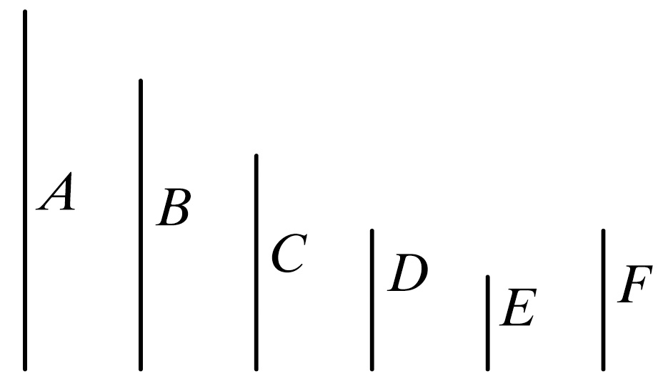
还可证它也是最大公度数．
因为，如果D不是A，B，C的最大公度数，那么必有大于D的某数将量尽A，B，C.
设量尽它们的那个数是E.
既然E量尽A，B，C；
那么它也量尽A，B，进而它也量尽A，B的最大公度数． ［vii.2，推论］
但是A，B的最大公度数是D，
所以E量尽D，因而较大数量尽较小数：这是不可能的．
所以，没有大于D的数能量尽数A，B，C.
因而D是A，B，C的最大公度数．
其次设D量不尽C.
首先证明C，D不互素．
因为，A，B，C既然不互素，就必有某数量尽它们．
现在量尽A，B，C的某数也量尽A，B；
并且它量尽A，B的最大公度数D. ［vii.2，推论］
但是它也量尽C.
于是这个数同时量尽数D，C；从而D，C不互素．
然后设已得到它们的最大公度数E. ［vii.2］
这样，由于E量尽D，而D量尽A，B；
所以E也量尽A，B.
但是它也量尽C，所以E量尽A，B，C，
所以E是A，B，C的一个公度数．
再其次证明E也是最大公度数．
因为，如果E不是A，B，C的最大公度数，那么必有大于E的某数F量尽数A，B，C.
现在，F量尽A，B，C，那么它也量尽A，B，所以它也量尽A，B的最大公度数． ［vii.2，推论］
然而A，B的最大公度数是D，所以F量尽D.
且它也量尽C，这就使得它同时量尽D，C，进而量尽D，C的最大公度数． ［vii.2，推论］
但是，D，C的最大公度数是E，所以F量尽E，较大数量尽较小数：这是不可能的．
所以没有大于E的数量尽A，B，C.
故E是A，B，C的最大公度数．
证完
欧几里得在此处给出的证明比我们自己能给出的证明更长，因为他区分出两种情形来讨论，较为简单的那种情形包含在另一种情形里．
给定三个整数a，b，c，其中a，b的最大公约数是d．他区分出两种情形：
（1）d能量尽c；
（2）d不能量尽c．
在第一种情形里，d，c的最大公约数是d本身；在第二种情形里，可由vii.2的过程得出．无论哪一种情形，a，b，c的最大公约数都是d，c的最大公约数．
但是，对较为简单的情形进行处理之后，欧几里得认为有必要证明：若d不能量尽c，则d和c一定有一个最大公约数．这源于初始的假设，即a，b，c的两两不互素．由于它们彼此不互素，它们必定有一个公约数，而a，b的任意公约数都是d的一个因数，因此a，b，c的任意的公约数必是d，c的一个公约数，因此d，c一定有一个公约数，所以，它们两两不互素．
情形（1）和（2）中的证明恰好与vii.2的讨论一致，分别证明了对于情形（1）中的d和情形（2）中的e，其中e是d，c的最大公约数．
（α）它是a，b，c的一个公约数，
（β）它是最大公约数．
海伦（Heron）［an-Nairīzī，Curtze编］注意到，此方法不仅可使我们能求得三个数的最大公约数，也可以用来求任意多个数的最大公约数．这是因为任何可量尽两个数的数，同样也都可量尽它们的最大公约数；因此，我们能求出每一对数的G.C.M（最大公约数），从而也能求出每对数的G.C.M，等等，直到只剩下两个数，然后求出这两个数的G.C.M，即可．欧几里得在vii.33中不言而喻地作出这样的扩展，求出了任意多个数的最大公约数．
命题4 较小的数是较大的数的一部分或几部分．
设A，BC是两数，且BC是较小者．
则可证BC是A的一部分或几部分．
因为A，BC或者互素，或者不互素．
首先设A，BC是互素的．
这样，如果分BC为若干单位，在BC中的每个单位是A的一部分，于是BC是A的几部分．
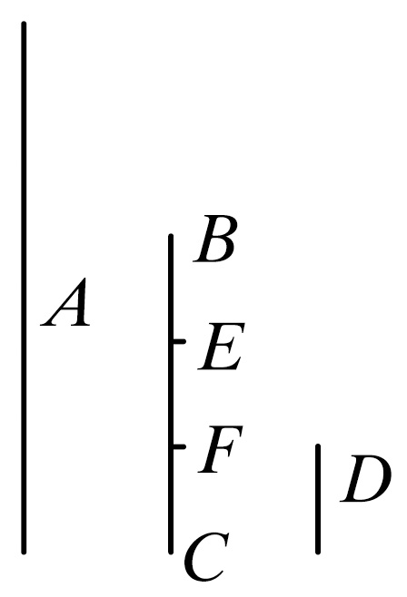
其次设A，BC不互素，那么BC或者量尽或者量不尽A.
如果BC量尽A，BC是A的一部分．
但是，如果BC量不尽A，
则可求得A，BC的最大公度数是D， ［vii.2］
且使BC被分为等于D的一些数，即BE，EF，FC.
现在，因为D量尽A，那么D是A的一部分．
但是D等于数BE，EF，FC的每一个，
所以BE，EF，FC的每一个也是A的一部分，于是BC是A的几部分．
证完
本命题的意义当然是：看两数a，b中，b是较小的那个，则b要么是a的因数（a的“一部分”）；要么是a的某个真分数（a的“几部分”）．
（1）若a、b互素，把每一个都分成若干单位，则b包含着b个同样的部分（它们与a可包含的每个部分相同），因而b是a的“几部分”或某一个真分数．
（2）若a、b不互素，则b要么能整除a，在这种情形里，b是a的一个约数，或a的一部分；要么是：g是a、b的最大公约数，可设a=mg和b=ng，b含有n个相同的部分（即g），a含有m个相同的部分，因而b又是a的一部分或某个真分数（“几部分”）．
命题5 若一小数是一大数的一部分，且另一小数是另一大数的具有同样的部分，那么两小数之和也是两大数之和的一部分，且与小数是大数的部分相同．
设数A是BC的一部分，且另一数D是另一数EF的一部分与A是BC的部分相同．
则可证A，D之和也是BC，EF之和的一部分，且与A是BC的部分相同．
因为无论A是BC怎样的一部分，D也是EF的同样的一部分．
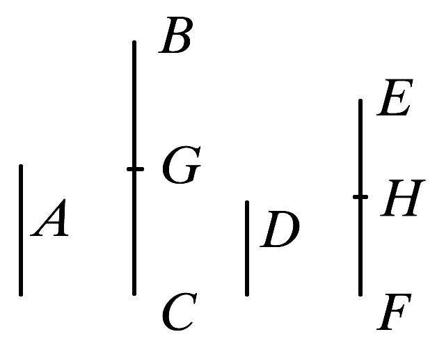
所以在BC中有多少个等于A的数，那么在FE中就有同样多少个等于D的数．
将BC分为等于A的数，即BG，GC，又将EF分为等于D的数，即EH，HF，这样BG，GC的个数等于EH，HF的个数．
又，由于BG等于A，以及EH等于D，所以BG，EH之和也等于A，D之和．
同理，GC，HF之和也等于A，D之和．
所以在BC中有多少个等于A的数，那么在BC，EF之和中就有同样多少个等于A，D之和的数．
所以无论BC是A的多大倍数，BC与EF之和也是A与D之和的同一倍数．
因此，无论A是BC怎样的一部分，也有A，D的和是BC，EF之和的同样的一部分．
证完
如果
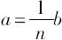
， 而且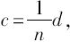
， 则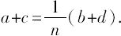
.正如下一个命题所示，本命题当然对于任意多个类似的数对也成立，并且，这两个命题都用于vii.9，10的推广形式中．
命题6 若一个数是一个数的几部分，且另一个数是另一个数的同样的几部分，则其和也是和的几部分与一个数是一个数的几部分相同．
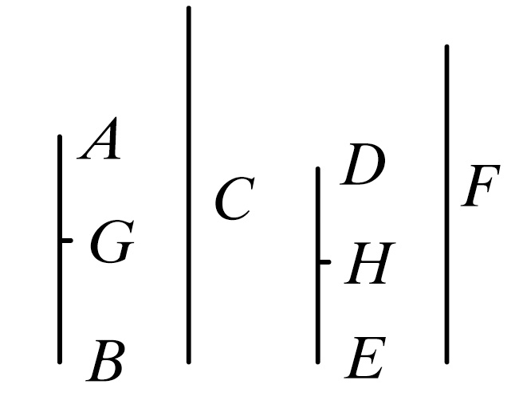
为此，设数AB是数C的几部分，且另一数DE是另一数F的几部分与AB是C的几部分相同．
则可证AB，DE之和也是C，F之和的几部分，且与AB是C的几部分相同．
因为无论AB是C的怎样的几部分，DE也是F的同样的几部分，所以在AB中有多少个C的一部分，那么在DE中有同样多个F的一部分．
将AB分为C的几个一部分，即AG，GB；又将DE分为F的几个一部分，即DH，HF，这样AG，GB的个数将等于DH，HF的个数．
且因为AG是C的无论怎样的一部分，那么DH也是F的同样的一部分．
所以AG是C无论怎样的一部分，那么AG，DH之和也是C，F之和的同样的一部分． ［vii.5］
同理，无论GB是C的怎样的一部分，那么GB，HE之和也是C，F之和的同样的一部分．
故无论AB是C的怎样的几部分，那么AB，DE之和也是C，F之和的同样的几部分．
证完
如果
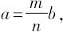
， 而且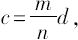
，则
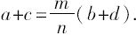
更为一般地，如果
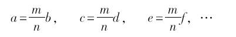
则
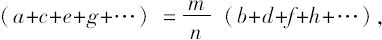
在欧几里得的命题中令m<n，但这结果的一般性显然地并不受到影响．这个命题和上一个命题是对v.1的补充：证明了用“倍数”替换“部分”或“几部分”的相应结果．
命题7 如果一个数是另一个数的一部分与其一减数是另一减数的一部分相同，则余数也是另一余数的一部分且与整个数是另一整个数的一部分相同．
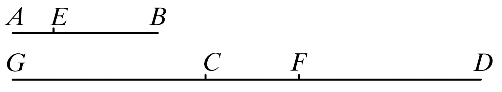
为此，设数AB是CD的一部分，这一部分与减数AE是减数CF的一部分相同．
则可证余数EB也是余数FD的一部分与整个数AB是整个数CD的一部分相同．
因为无论AE是CF怎样的一部分，可设EB也是CG同样的一部分．
现在，由于无论AE是CF的怎样的一部分，那么EB也是CG同样的一部分，所以无论AE是CF的怎样的一部分，那么AB也是GF同样的一部分． ［vii.5］
但是，由假设无论AE是CF怎样的一部分，那么AB也是CD同样的一部分．
所以无论AB是GF的怎样的一部分，那么它也是CD同样的一部分，故GF等于CD.
设从以上每个中减去CF，于是余数GC等于余数FD.
现在，由于无论AE是CF的怎样的一部分，那么EB也是GC的同样的一部分．
而GC等于FD，所以无论AE是CF的怎样的一部分，那么EB也是FD的同样的一部分．
但是，无论AE是CF的怎样的一部分，那么AB也是CD同样的一部分．
所以余数EB也是余数FD的一部分与整个数AB是整个数CD的一部分相同．
证完
如果
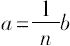
，而且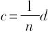
，我们将证明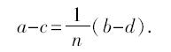
所得结果不同于vii.5的结果，其中的减号代替了加号．欧几里得的方法如下：
取e使得
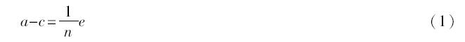
现在
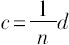
因此
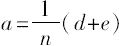
［vii.5］于是由假设 d+e=b，
所以 e=b-d，
把这个e的值代入（1）中，我们有
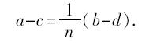
命题8 如果一个数是另一个数的几部分与其一减数是另一减数的几部分相同，则其余数也是另一余数的几部分与整个数是另一整个数的几部分相同．
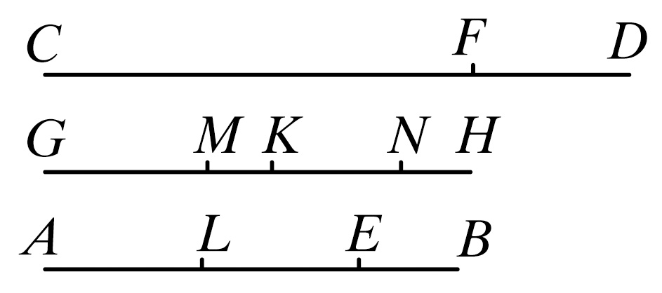
为此，设数AB是CD的几部分与减数AE是减数CF的几部分相同．
则可证余数EB是余数FD的几部分，且与整个AB是整个CD的几部分相同．
为此取GH等于AB.
于是，无论GH是CD的怎样的几部分，那么AE也是CF的同样的几部分．
设分GH为CD的几个部分，即GK，KH，且分AE为CF的几个一部分，即AL，LE；
于是GK，KH的个数等于AL，LE的个数．
现在，由于无论GK是CD的怎样的一部分，那么AL也是CF同样的一部分．
而CD大于CF，所以GK也大于AL.
作GM等于AL.
于是无论GK是CD的怎样的一部分，那么GM也是CF同样的一部分．
所以余数MK是余数FD的一部分与整个数GK是整个数CD的一部分相同． ［vii.7］
又由于无论KH是CD的怎样的一部分，EL也是CF同样的一部分．
而CD大于CF，所以KH也大于EL.
作KN等于EL.
于是，无论KH是CD的怎样的一部分，那么KN也是CF同样的一部分．
所以余数NH是余数FD的一部分与整个KH是整个CD的一部分相同． ［vii.7］
但是，已证余数MK是余数FD的一部分与整个GK是整个CD的一部分相同，所以MK，NH之和是DF的几部分与整个HG是整个CD的几部分相同．
但是，MK，NH的和等于EB，又HG等于BA.
所以余数EB是余数FD的几部分与整个AB是整个CD的几部分相同．
证完
如果
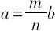
而且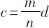
（m<n），则
欧几里得的证明相当于如下的过程：
取e等于
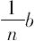
而且f等于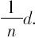
然后由假设b>d，得出 e>f
而且由vii.7
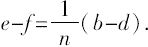
对于a，b等于e和f的那些部分分别地重复此过程，由加法（a，b分别含有m个这样的部分），
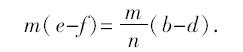
但是 m（e-f）=a-c，
因此
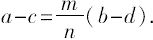
命题vii.7，8是对v.5的补充，说明了用“倍数”替换“部分”或“几部分”的相应的结果．
命题9 如果一个数是一个数的一部分，而另一个数是另一个数的同样的一部分，则取更比后，无论第一个是第三个的怎样的一部分或几部分，那么第二个也是第四个同样的一部分或几部分．
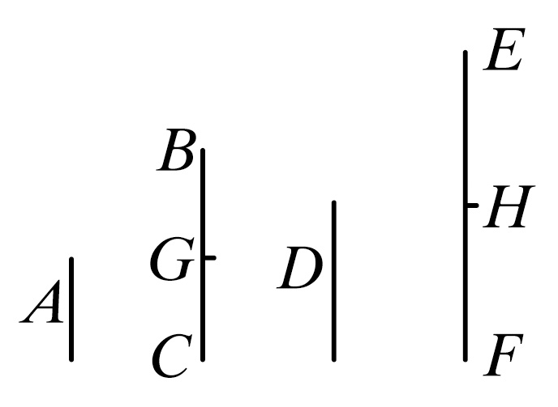
为此，设数A是数BC的一部分，且另一数D是另一数EF的一部分与A是BC的一部分相同．
则可证取更比后，无论A是D的怎样的一部分或几部分，那么BC也是EF的同样的一部分或几部分．
因为，由于无论A是BC的怎样的一部分，D也是EF的相同的一部分；所以在BC中有多少个等于A的数，在EF中也就有多少个等于D的数．
设分BC为等于A的数，即BG，GC，又分EF为等于D的数，即EH，HF，于是BG，GC的个数等于EH，HF的个数．
现在，由于数BG，GC彼此相等，且数EH，HF也彼此相等，而BG，GC的个数等于EH，HF的个数．
所以，无论BG是EH的怎样的一部分或几部分，那么GC也是HF的同样的一部分或几部分．
所以，还有无论BG是EH的怎样的一部分或几部分，那么和BC也是和EF的同样的一部分或几部分． ［vii5，6］
但是BC等于A，以及EH等于D.
所以无论A是D的怎样的一部分或几部分，那么BC也是EF的同样的一部分或几部分．
证完
如果
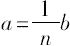
而且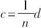
，则无论a是c的什么样的分数（“部分”或“几部分”），则b也是d的同样的分数．把b分成几部分，每一部分等于a；d也分成同样的几部分，每一部分等于c，显然，无论a的一个部分是c的一个部分的什么样的分数，a的其他任一部分也是c的其他任一部分的同样的分数，而且a的部分的个数等于c的部分的个数，即n．
因此，由vii.5，6，a是c的什么样的分数，na也是nc的同样的分数．对于b，d也是如此．
命题10 如果一个数是一个数的几部分，且另一个数是另一数的同样的几部分，则取更比后，无论第一个是第三个的怎样的几部分或一部分，那么第二个也是第四个同样的几部分或一部分．
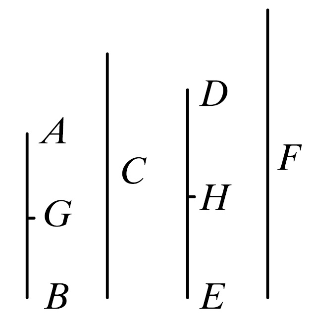
为此，设数AB是数C的几部分，且另一数DE是另一数F的同样的几部分．
则可证取更比，无论AB是DE怎样的几部分或一部分，那么，C也是F的同样的几部分或一部分．
因为，由于无论AB是C的怎样的几部分，那么DE也是F的同样的几部分．
所以，正如在AB中有C的几个一部分，在DE中也有F的几个一部分．
将AB分为C的几个一部分，即AG，GB，又将DE分为F的几个一部分，即DH，HE；于是AG，GB的个数等于DH，HE的个数．
现在，由于无论AG是C的怎样的一部分，那么DH也是F的同样的一部分．
变更后也有，无论AG是DH的怎样的一部分或几部分，那么C也是F的同样的一部分或几部分． ［vii.9］
同理也有，无论GB是HE的怎样的一部分或几部分，那么C也是F的同样的一部分或几部分．
于是，还有无论AB是DE怎样的几部分或一部分，那么C也是F的同样的几部分或一部分． ［vii.5，6］
证完
如果
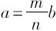
而且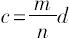
，则无论a是c的什么分数，b也是d的同样的分数．为了证明此条，将a分成m个部分，每个部分等于b/n．而且将c分成m个部分，每个部分等于d/n．
然后由vii.9，无论a的m个部分之一是c的m个部分之一的什么样的分数，b也是d的同样的分数．
又由vii.5，6，无论a的m个部分之一是c的m个部分之一的什么样的分数，a的m个部分之和（即a）也是c的m个部分之和（即c）的同样的真分数．
由此结果如下：
在希腊原文中，倒数第二行的“所以，此外”之后，是为使vii.5，6更为清晰的进一步的解释即：“无论AG是DH的什么部分，GB也是HE的同样的部分，也因此，无论AG是DH的部分或几部分，AB也是DE的同样的部分或几部分．［vii.5，6］”
但是已证明的是如书中最后两行所写：“无论AG是DH的什么样的部分（“部分”或“几部分”），C也是F的同样的部分（“部分”或“几部分”），因而也是……”．
根据手抄本P中只在页边空白处所写的几句话，海伯格（Heiberg）推断：它们可能出于赛翁（Theon）的修订本．
命题11 如果整个数比整个数如同减数比减数，则余数比余数也如同整个数比整个数．
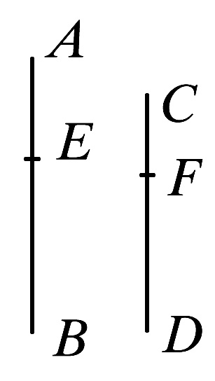
设整个数AB比整个数CD如同减数AE比减数CF.
则可证余数EB比余数FD也如同整个数AB比整个数CD.
由于AB比CD如同AE比CF，那么无论AB是CD的怎样的一部分或几部分，AE也是CF的同样的一部分或几部分．
［vii.定义20］
所以，也有余数EB是余数FD的一部分或几部分也与AB是CD的一部分或几部分相同． ［vii.7，8］
故EB比FD如同AB比CD. ［vii.定义20］
证完
可以看出，在处理命题11～13中的比例问题时，欧几里得只考虑到第一个数是第二个数的“部分”或“几部分”的情况，在命题13中，他也假定第一个数是第三个数的“一部分”或“几部分”，也就是说，在这三个命题中都假定第一个数小于第二个数，而在命题13里，假定第一个数小于第三个数，然而，命题11～13中的附图却与这些假定不一致，若要与这些命题中的附图保持一致的话，有心要考虑比例的定义（vii定义20）中涉及的其他的可能性，也就是第一个数可以是与它比较的其他数的倍数，或者是倍数加上“一部分”或“几部分”（也包括“倍数”）．这样就能考虑到很多不同情形，补救的办法是：将比项较低的比例作为开头的比例，必要时可以取其反比例，按字面意义地使它成为“一部分”或“几部分”．
如果 a：b＝c：d （a＞c，b＞d），
则 （a-c）：（b-d）＝a：b.
这个关于数的命题对应于关于量的v.19的命题，除了用阳性词（与
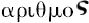
一致）代替中性词（与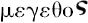
一致）以外，对于这两个命题的阐述也相同．此证明只不过是比例的算术定义（vii定义20）与vii.7，8中的结果的结合．比例语言由定义20变成了分数语言．利用vii.7，8的结果，又由定义20变成了比例语言．
命题12 如果有成比例的许多数，则前项之一比后项之一如同所有前项的和比所有后项的和．
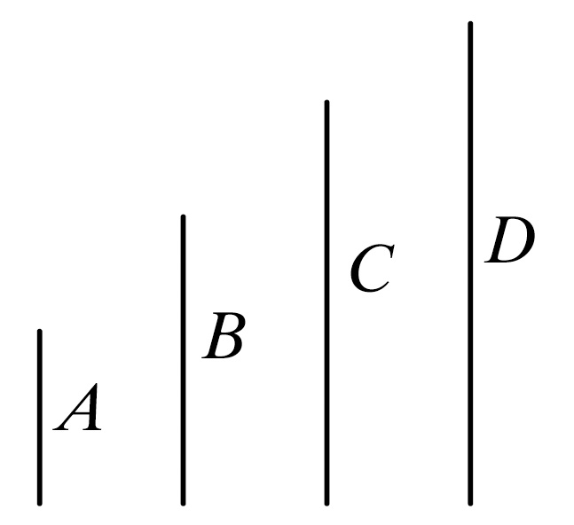
设A，B，C，D是成比例的一些数，即A比B如同C比D.
则可证A比B如同A，C的和比B，D的和．
因为，A比B如同C比D，
所以无论A是B怎样的一部分或几部分，那么C也是D的同样的一部分或几部分． ［vii.定义20］
所以A，C之和是B，D之和的一部分或几部分与A是B的一部分或几部分相同． ［vii.5，6］
故A比B如同A，C之和比B，D之和． ［vii.定义20］
证完
如果 a：a'＝b：b'＝c：c'＝…，
则每个比都等于（a+b+c+…）：（a'＋b'＋c'＋…）.
此命题与v.12对应，阐述的语言一模一样，除了
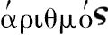
取代了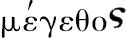
以外．证明又只是把比例的算术定义（vii.定义20）与vii.5，6的结果联系起来，不仅仅针对像vii.5，6中的两数的情形，对于多个数而言也被引用为正确的．
命题13 如果四个数成比例，则它们的更比也成立．
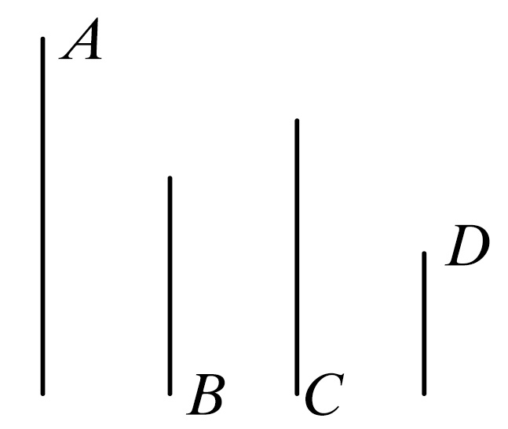
设四个数A，B，C，D成比例，即A比B如同C比D.
则可证它们的更比成立，
即A比C如同B比D.
因为，由于A比B如同C比D.
所以无论A是B的怎样的一部分或几部分，
那么C也是D的具有同样的一部分或几部分． ［vii.定义20］
于是，取更比，无论A是C的怎样的一部分或几部分，那么B也是D的同样的一部分或几部分． ［vii.10］
故A比C如同B比D. ［vii.定义20］
证完
如果 a：b＝c：d，
然后取更比 a：c＝b：d.
此命题与关于量的v.16对应，证明来自将vii.定义20与vii.10的结果联系起来．
命题14 如果有任意多的数，另外有和它们个数相等的一些数，且每组取两个作成的比相同，则它们首末比也相同．
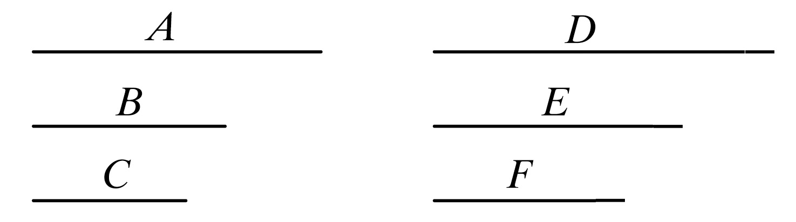
设有一些数A，B，C和与它们个数相等的数D，E，F，且每组取两个作成相同的比，即
A比B如同D比E，
B比C如同E比F.
则可证取首末比，A比C如同D比F.
因为，由于A比B如同D比E，
所以取更比，A比D如同B比E. ［vii.13］
又由于，B比C如同E如F，
所以取更比，B比E如同C比F. ［vii.13］
但是，B比E如同A比D，所以也有，A比D如同C比F.
于是，取更比，A比C如同D比F. ［vii.13］
证完
如果 a：b=d：e，
而且 b：c=e：f，
则取首末比 a：c=d：f.
即使后面还有许多后继的数都如此相关，结果仍成立．
证明本身十分简单．
由vii.13，取更比 a：d=b：e，
而且 b：e=c：f，
因此 a：d=c：f，
而且，再取更比 a：c=d：f.
可以看出，这个简单方法并不能用来证明关于量的对应命题v.22，尽管在那一卷里居于v.22之前的是对应于这里可使用的两个命题，即v.16和v.11，原因在于这个方法仅对于六个相同类型的量的情形证明了v.22，然而v.22的量并未服从这个限制．
海伯格（Heiberg）在关于vii.19的一个注中提到，欧几里得通过一个独立的证明，再一次地证明了卷Ⅴ中对于数的几个命题，但在某些情况下却忽略了去做这样的证明．比如他经常在卷Ⅶ中使用v.11，在vii.19中使用v.9，在同一命题中使用v.7，等等．因此，海伯格（Heiberg）会显而易见地认为：欧几里得在现在的证明（凡与一个比相同的两个比必彼此相同）的最后一步中使用了v.11，我更倾向于认为，欧几里得把最后一步看作是不言自明的．因为，根据比例的定义，第一个数是第二个数的相同的倍数或相同的部分或相同的几部分，第三个数与第四个数的关系也与此相同；这个假定就是一个倍数或真分数分别等于另一个倍数或真分数．
尽管此命题只证明了六个数的情形，显然可以推广到任意多个数的情形（正如命题中所阐述的那样）．
命题15 若一个单位量尽任一数与另一数与量尽另外一数的次数相同．则取更比后，单位量尽第三数与第二数量尽第四数有相同的次数．
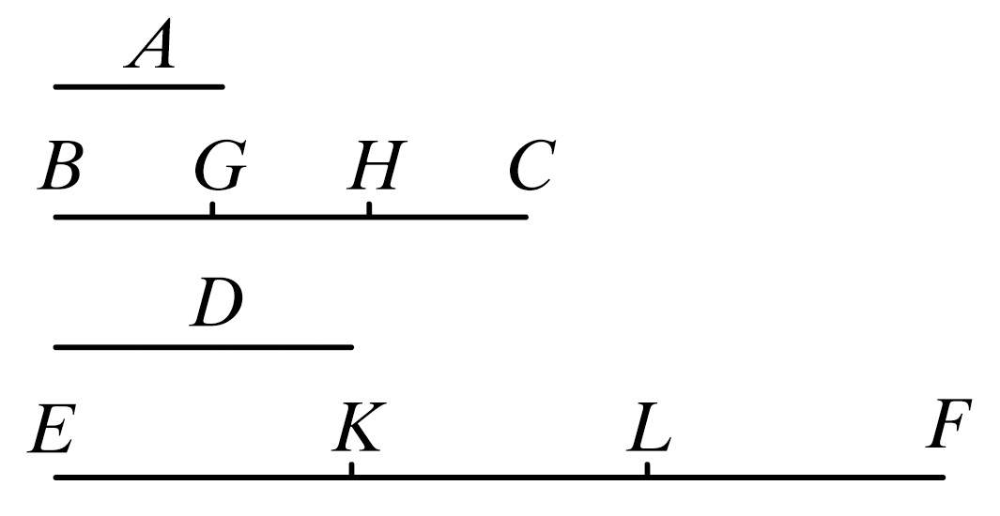
设单位A量尽一数BC与另一数D量尽另外一数EF的次数相同．
则可证取更比后，单位A量尽数D与BC量尽EF的次数相同．
因为，由于单位A量尽数BC与D量尽EF的次数相同，所以在BC中有多少个单位，那么在EF中也就有同样多少个等于D的数．
设分BC为单位BG，GH，HC，
又分EF为等于D的数EK，KL，LF.
这样BG，GH，HC的个数等于EK，KL，LF的个数．
又，由于各单位BG，GH，HC彼此相等，而各数EK，KL，LK也彼此相等，而单位BG，GH，HC的个数等于数EK，KL，LF的个数．
所以单位BG比数EK如同单位GH比数KL，又如同单位HC比数LF.
所以也有，前项之一比后项之一等于所有前项和比所有后项和，故单位BG比数EK如同BC比EF. ［vii.12］
但是单位BG等于单位A，且数EK等于数D.
故单位A比数D如同BC比EF.
所以单位A量尽D与BC量尽EF的次数相同．
证完
如果有四个数1、m、a、ma（使得1量尽m的次数与a量尽ma的次数相同）．则1量尽a的次数将与m量尽ma的次数相同．
除了第一个数是单位1，而且被量的数并不是其他数的一部分，这个命题及其证明与vii.9并无不同，实际上只是另一命题的一种特殊情形．
命题16 如果二数彼此相乘得二数，则所得二数彼此相等．
设A，B是两数，又设A乘B得C且B乘A得D［1］.
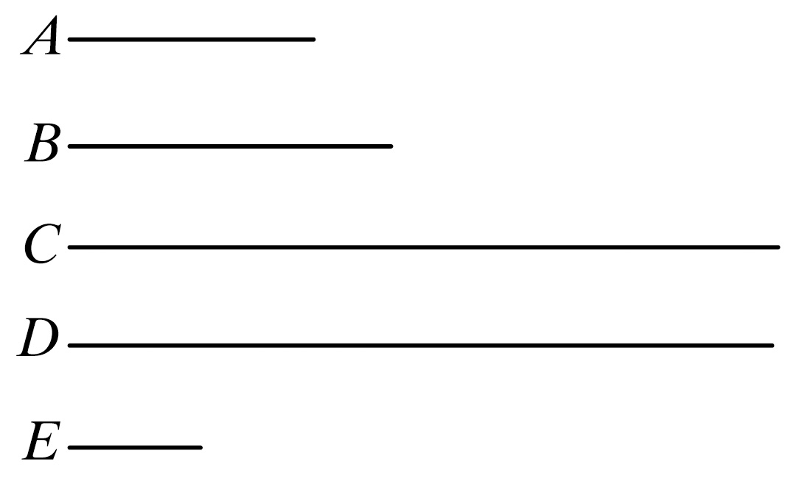
则可证C等于D.
因为，由于A乘B得C，所以B依照A中的单位数量尽C.
但是单位E量尽A，也是依照A中的单位数．
所以用单位E量尽A，与用数B量尽C的次数相同．
于是取更比，单位E量尽B与A量C的次数相同． ［vii.15］
又，由于B乘A得D，所以依照B中的单位数，A量尽D.
但是单位E量尽B也是依照B中的单位数．
所以用单位E量尽数B与用A量尽D的次数相同．
但是用单位E量尽数B与用A量尽C的次数相同．
所以A量尽数C，D的每一个有相同有次数．
故C等于D.
证完
［1］这样产生的二数（原英译是The numbers so produced）希腊原文是
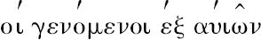
，英译是“the（numbers）produced from them”［从它们两产生的（数）］，“从它们”指的是“从原有的二数”，尽管在希腊文也并不很清楚，我想要消除不清楚，最好是不予考虑（英文：leaving out the words）.此命题证明了，任二数相乘，则乘法的次序无关紧要，可以写成ab=ba．
重要的是对欧几里得所说的“一个数乘另一个数”的意思须有一个清晰的理解．vii定义15规定“a乘b”（英文是“a multiplying b”）的作用是“取a倍的b”（英文是“taking a timcs b”），这里b是被乘数，把b取了a次，即将a个b加在一起，我们总是把“a乘以b”（a times b）表示成ab，把“b乘以a”（b times a）表示成ba，基于此，关于ab=ba的证明可以用比例的语言表示如下．
由vii定义20， 1：a＝b：ab，
因此，取更比例 1：b＝a：ab， ［vii.13］
又由vii定义20， 1：b＝a：ba，
因此 a：ab＝a：ba.
或者说 ab=ba.
欧几里得并未使用比例语言，却使用了分数语言或与之等价的度量，所援引的vii.15只是以截然不同的形式表达的vii.13的一种特殊情形，而不是vii.13本身．
命题17 如果一个数乘两数得某两数，则所得两数之比与被乘的两数之比相同．
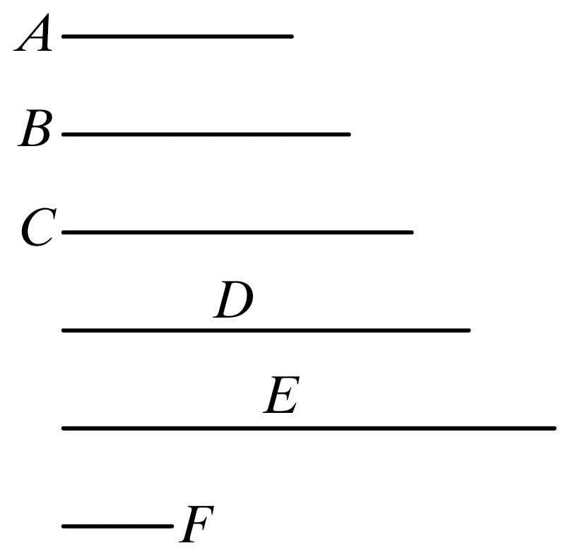
为此，设数A乘两数B，C得D，E.
则可证B比C如同D比E.
因为，由于A乘B得D，所以依照A中之单位数，B量尽D.
但是，单位F量尽数A也是依照A中的单位数，所以，用单位F量尽数A与用B量尽D有相同的次数．
故单位F比数A如同B比D. ［vii.定义20］
同理，单位F比数A也如同C比E；所以也有，B比D如同C比E.
故取更比，B比C如同D比E. ［vii.13］
证完
b：c＝ab：ac.
在本例中，欧几里得把度量的语言翻译成比例的语言，与最后一条注释中所给出的证明完全一样：
由vii定义20， 1：a＝b：ab，
而且 1：a=c：ac，
因此 b：ab=c：ac，
取更比 b：c=ab：ac. ［vii.13］
命题18 如果两数各乘任一数得某两数，则所得两数之比与两乘数之比相同．
为此，设两数A，B乘任一数C得D，E.
则可证A比B如同D比E.
因为，由于A乘C得D，所以C乘A也得D. ［vii.16］
同理也有，C乘B得E.
所以数C乘两数A，B得D，E.
所以，A比B如同D比E. ［vii.17］
证完
此处所证明的是 a：b=ac：bc，
论证如下：
ac=ca， ［vii.16］
类似地 bc=cb，
而且 a：b=ca：cb， ［vii.17］
因此 a：b=ac：bc.
命题19 如果四个数成比例，则第一个数和第四个数相乘所得的数等于第二个数和第三个数相乘所得的数；又如果第一个数和第四个数相乘所得的数等于第二个数和第三个数相乘所得的数，则这四个数成比例．
为此，设A，B，C，D四个数成比例，即
A比B如同C比D，
又设A乘D得E，以及B乘C得F.
则可证E等F.
为此，设A乘C得G.
这时，由于A乘C得G，且A乘D得E，于是数A乘两数C，D得G，E.
所以，C比D如同G比E. ［vii.17］
但是，C比D如同A比B，所以也有A比B如同G比E.
又，由于A乘C得G，但是，还有B乘C得F，于是两数A，B乘以一确定的数C得G，F.
所以，A比B如同G比F. ［vii.18］
但是还有，A比B也如同G比E；所以也有，G比E如同G比F.
故G与两数E，F每一个有相同比，所以E等于F. ［参看v.9］
又若令E等于F.
则可证A比B如同C比D.为此，用上述的作图．
因为E等于F，所以G比E如同G比F. ［参看v.7］
但是，G比E如同C比D，且G比F如同A比B. ［vii.17］［Ⅶ.18］
所以也有，A比B如同C比D.
证完
如果 a：b＝c：d，
则 ad=bc；其逆亦真．
证明相当于如下的过程：
（1）ac：ad=c：d， ［vii.17］
=a：b，
但是 a：b=ac：bc， ［vii.18］
因此 ac：ad=ac：bc，
或者说 ad=bc.
（2）由于 ad=bc，
ac：ad=ac：bc，
但是 ac：ad=c：d， ［vii.17］
而且 ac：bc=a：b， ［vii.18］
因此 a：b=c：d．
正如上面vii.14的注释中所示：海伯格（Heiberg）认为欧几里得分别基于命题v.9和v.7在本证明的部分（1）的最后步骤和部分（2）的开头步骤中所作出的推理，因为他在这一卷中对于数的那些命题没有作出单独的证明．我宁愿相信，鉴于比例中的数的定义，所以他会认为推理是显然的并不需要证明．例如，若ac是bc的一个分数（“部分”或“几部分”），则ac也是ad的同样的分数，显然，ad必等于bc．
海伯格（Heiberg）在他的正文中有所删改，并把一些内容放到附录里．手抄本v.p.ϕ中出现的命题大意是：若三个数成比例，则最大数和最小数的乘积等于平均值的平方，其逆亦真．这在第一手抄本P中并未出现．B中只出现于页边空白处，坎帕努斯（Campanus）省略了它，并评论说欧几里得没有像在vi.17中所做的那样给出三个比例数的命题，因为这很容易通过刚给出的命题进行证明，而且奈依莱芝（an-Nairzī）将这个关于三个比例数的命题引用为一个关于vii.19的观察结论，这大概是由海伦（Heron）［在前面章节中曾提及］提出的．
命题20 用有相同比的数对中最小的一对数，分别量其他数对，则大的量尽大的，小的量尽小的，且所得的次数相同．
为此，设CD，EF是与A，B有相同比的数对中最小的一对数．
则可证CD量尽A与EF量尽B有相同的次数．
此处CD不是A的几部分．
因为，如果可能的话，设它是这样，EF是B的几部分与CD是A的几部分相同． ［vii.13和定义20］
所以，在CD中有A的多少个一部分，则在EF中也有B的同样多少个一部分．
将CD分为A的一部分，即CG，GD，且EF分为B的一部分，即EH，HF.
这样CG，GD的个数等于EH，HF的个数．
现在，由于CG，GD彼此相等，且EH，HF彼此相等，而CG，GD的个数等于EH，HF的个数．
所以，CG比EH如同GD比HF.
所以也有，前项之一比后项之一如同所有前项之和比所有后项之和． ［vii.12］
于是CG比EH如同CD比EF.
故CG，EH与小于它们的数CD，EF有相同比：这是不可能的，因为由假设CD，EF是和它们有相同比中的最小两数．
所以CD不是A的几部分，因而CD是A的一部分． ［vii.4］
又EF是B的一部分与CD是A的一部分相同． ［vii.13和定义20］
所以CD量尽A与EF量尽B有相同的次数．
证完
如果a，b是那些具有相同的比的数对中最小的一对［也就是：如果a/b是相同诸比中项最低的分数（又称最简分数或既约分数）］，而c，d是具有相同的比中其他的一对，也就是，如果
a：b＝c：d，
则 ， 而且 ，这里n是某个整数．
证明用了反证法如下：
［因为a<c，由vii.4，a是c的一部分或n部分］
现在a不能等于，这是m是大于1而小于n的整数．
因为，如果，则也有． ［vii.13及定义20］
取a的m个部分的每一部分与b的m个部分的每一部分两两对比，所有数对的数作成的比都等于相同的比 ，
因此
但是和分别地小于a，b而它们的比相同，与假设矛盾．
因此a只能是c的“一部分”，或者说
a的形式是．
因而 b的形式是．
海伯格（Heiberg）在此处忽略了一个命题，此命题无疑是赛翁（Theon）为了证明关于数的命题“当三对数形成波动比例时它们也形成首末比例”而增加的（B，V，p，ϕ诸手抄本把这命题作为vii.22，但是P在后来的版本把它放在页边空白处，坎帕努斯（Campanus）也略去此命题）（参见v.22的阐述）：如果
a：b=e：f， （1）
而且 b：c=d：e， （2）
那么 a：c=d：f
这个证明［见海伯格（Heiberg）的附录］依赖vii.19：
由（1）有 af=be，
又由（2） be=cd， ［vii.19］
因此 af=cd，
相应地有 a：c=d：f. ［vii.19］
命题21 互素的两数是与它们有同比数对中最小的．
设A，B是互素的数．
则可证A，B是与它们有相同比的数对中最小的．
因为，如果不是这样，将有与A，B同比的数对小于A，B，设它们是C，D.
这时，由于有相同比的最小一对数，分别量尽与它们有相同比的数对，所得的次数相同，
即前项量尽前项与后项量尽后项的次数相同． ［vii.20］
所以C量尽A的次数与D量尽B的次数相同．
现在，C量尽A有多少次，就设在E中有多少单位．
于是，依照E中单位数，D也量尽B.
又由于依照E中单位数C量尽A，所以依照C中单位数，E也量尽A. ［vii.16］
同理，依照D中单位数，E也量尽B. ［vii.16］
所以，E量尽互素的数A，B：这是不可能的．
于是没有与A，B同比且小于A，B的数对．
所以A，B是与它们有同比的数对中最小的一对．
证完
换言之，若a，b互素，则比a：b是“比项最低”的．
证明相当于以下的过程：
若不是，则可假设c，d是使得
a：b＝c：d，
的最小的一对数．
［欧几里得只是假设有某二数c，d，其比与比a：b相同，而且使得c<a，因而也有d<b．为了使我们能够在论述中使用vii.20，有必要假设c、d是这个比例中最小的一对数．
于是［vii.20］a=mc，而且b=md，这里m是某个整数，
因此
a=cm， b=dm ［vii.16］
而m是a、b的一个公因数，可是它们互素，这是不可能的． ［vii.定义12］
这样，与a比b的比相同的数对中最小的一对数不能小于a、b本身．
上面所援引的vii.16，海伯格（Heiberg）认为，其理由是vii.15．我认为，由文中的措辞与定义15的语词相结合来看，其理由是前者而非后者．
命题22 有相同比的一些数对中的最小一数对是互素的．
设A，B是与它们有同比的一些数对中最小数对．
则可证A，B互素．
因为，如果它们不互素，那么就有某个数能量尽它们．
设能量尽它们的数是C.
又C量尽A有多少次，就设在D中有多少个单位．
而且，C量尽B有多少次，就设E中有多少个单位．
由于依照D中单位数，C量尽A，
所以C乘D得A. ［vii.定义15］
同理也有，C乘E得B.
这样，数C乘两数D，E各得出A，B.
所以，D比E如同A比B，因此D，E与A，B有相同的比，且小于它们：这是不可能的． ［vii.17］
于是没有一个数能量尽数A，B.
故A，B互素．
证完
若 a：b是“比例中最小的一对”，则a，b互素．
证明又是间接的［反证法］．
若 a：b不互素，它们必有某个公约数c，而且
a=mc， b=nc.
因此， m：n＝a：b， ［vii.17或18］
但是，m，n分别小于a，b．所以a：b并非比项最小的一对，此与假设矛盾．
命题23 如果两数互素，则能量尽其一的数必与另一数互素．
设A，B是两互素的数，又设数C量尽A.
则可证C，B也是互素的．
因为，如果C，B不互素，那么，有某个数量尽C，B.
设量尽它们的数是D.
因为D量尽C且量尽A，所以D也量尽A.
但是它也量尽B.
所以D量尽互素的A，B：这是不可能的．
［vii.定义12］
所以没有数能量尽数C，B.
故C，B互素．
证完
若a，mb互素，b与a也互素．因为若不互素，则有某数d量尽a和b，于是它也量尽a和mb，此与假设矛盾．
命题24 如果两数与某数互素，则它们的乘积与该数也是互素的［1］．
设两数A，B与数C互素，又设A乘B得D.
则可证C，D互素．
因为，如果C，D不互素，那么有一个数将量尽C，D.
设量尽它们的数是E.
现在，由于C，A互素，且确定了数E量尽C，
所以A，E是互素的． ［vii.23］
这时，E量尽D有多少次，就设在F中有多少单位．
所以依照在E中有多少单位F也量尽D. ［vii.16］
于是，E乘F得D. ［vii.定义15］
但还有，A乘B也得D.
所以E，F的乘积等于A，B的乘积．
但是，如果两外项之积等于内项之积，那么这四个数成比例． ［vii.19］
所以，E比A如同B比F.
但是A，E互素，而互素的两数也是与它们有同比的数对中的最小数对． ［vii.21］
因为有相同比的一些数对中最小的一对数，其大，小两数分别量尽具有同比的大小两数，则所得的次数相同，即前项量尽前项和后项量尽后项； ［vii.20］
所以E量尽B.
但是，它也量尽C.
于是E量尽互素二数B，C：这是不可能的． ［vii.定义12］
所以没有数能量尽数C，D.
故C，D互素．
证完
［1］它们的乘积，希腊原文是．逐字直译的英文是“the（number）produced from the one of them”，意思是“从它们所产生的（数）”．因此将译成“它们的乘积．”
若a，b两者都与c互素，则ab，c也互素．
证明又是用反证法：
若ab，c不互素，设它们都可以被d量尽，而且分别等于md，nd，比方说，
现在，由于a，c互素，而d是c的因数，
a，d互素． ［vii.23］
但是，由于 ab
d：a=md
=b：m. ［vii.19］
因此［vii.20］ d可量尽b．
或者说 b=nd，
但是 c=pd，
因此，d可量尽b和c两者，因而这两者不互素，这是不可能的．
命题25 如果两数互素，则其中之一的自乘积［1］与另一个数是互素的．
设A，B两数互素，且设A自乘得C.
则可证B，C互素．
因为，若取D等于A.
由于A，B互素，且A等于D，所以D，B也互素，
于是两数D，A的每一个与B互素．
所以D，A之乘积也与B互素． ［vii.24］
但D，A之乘积是C.
故，C，B互素．
证完
［1］其中一个的自乘积，希腊原文是，逐字直译的英文是：“the number produced from the one of them”，意思是：“从它们之一所产生的数．”漏掉了要理解的“自身相乘的”（“multiplied into itself”）的形容词．
若a、b互素，则
a2与b互素．
欧几里得取d等于a，所以d，a都与b互素．
因此，vii.24，da即a2也与b互素．
此命题是前面命题的一个特例，证明方法只是在那个命题的结果中代换成不同的数而已．
命题26 如果两数与另两数的每一个都互素，则两数乘积与另两数的乘积也是互素的．
为此，设两数A，B与两数C，D的每一个都互素，又设A乘B得E，C乘D得F.
则可证E，F互素．
因为，由于数A，B的每一个与C互素，
所以，A，B的乘积也与C互素． ［vii.24］
但是A，B的乘积是E，所以E，C互素．
同理，E，D也是互素的．
于是数C，D的每一个与E互素．
所以C，D的乘积也与E互素． ［vii.24］
但是C，D的乘积是F.
故E，F互素．
证完
若a和b两者都与c，d二数的每一个都互素，则ab，cd将互素．
由于a，b两者都与c互素，故
ab，c互素， ［vii.24］
类似地， ab，d互素．
因此， c，d两者都与ab互素
所以cd也与ab互素． ［vii.24］
命题27 如果两数互素，且每个自乘得一确定的数，则这些乘积是互素的；又原数乘以乘积得某数，这最后乘积也是互素的［依此类推］．
设A，B两数互素，又设A自乘得C，且A乘C得D，且设B自乘得E，B乘E得F.
则可证C与E互素，D与F互素．
因为A，B互素，且A自乘得C，所以C，B互素．
由于，这时C，B互素，且B自乘得E，所以C，E互素． ［vii.25］
又，由于A，B互素，且B自乘得E，
所以A，E互素． ［vii.25］
由于这时，两数A，C与两数B，E的每一个互素，所以A，C之积与B，E之积也互素． ［vii.26］
且A，C的乘积是D；B，E的乘积是F.
故D，F互素．
证完
若a，b互素，则a2，b2；a3，b3都互素，一般地，an，bn也互素．
在命题中断言对任意次幂都真实的措辞是有待商榷的，并且被海伯格（Heiberg）加上了括号，因为（1）在希腊原文中，的使用是罕见的，因为它只能指“最后的乘积”，而且（2）论证中没有与它们对应的词语，更不用说一般化的证明．坎帕努斯（Campanus）在阐述中略去了这些词语，虽然他为这个证明添加了一段注解说此命题对于a，b的任意次幂、相同的或不同的幂都成立．海伯格（Heiberg）推断这些话是比赛翁（Theon）更早的一次篡改．
欧几里得的证明相当于这样：
因为a，b互素，所以a2，b互素［vii.25］，a2，b2也互素．
类似地［vii.25］，a，b2互素，因此a，a2和b，b2满足vii.26中阐述的条件．
这样a3与b3互素．
命题28 如果两数互素，则其和与它们的每一个也互素；又如果两数之和与它们任一个互素，则原二数也互素．
为此，设互素的两数AB，BC相加．
则可证其和AC与数AB，BC每一个也互素．
因为，如果AC，AB不互素，那么将有某数量尽AC，AB.
设量尽它们的数是D.
这时，由于D量尽AC，AB，所以它也量尽余数BC.
但是它也量尽AB，所以D量尽互素的二数AB，BC：这是不可能的． ［vii.定义12］
所以，没有数量尽AC，AB.
所以，AC，AB互素．
同理，AC，BC也互素．
所以，AC与数AB，BC的每一个互素．
又设AC，AB互素．
则可证AB，BC也互素．
因为，如果AB，BC不互素，那么有某数量尽AB，BC.
设量尽它们的数是D.
这时，由于D量尽数AB，BC的每一个，那么它也要量尽整个数AC.
但是它也量尽AB；
所以，D量尽互素二数AC，AB：
这是不可能的． ［vii.定义12］
于是没有数可以量尽AB，BC.
所以AB，BC互素．
证完
若a，b互素，则a+b与a和b两者都互素，其逆亦真．
因为，假设（a+b），a不互素，则它们必有某个公约数d．
因此d可除尽二数之差（a+b）-a即b以及a；因而a，b不互素；与假设矛盾．
因此 a+b与a互素．
类似地 a+b与b互素．
用同样方法可证明逆命题．
海伯格（Heiberg）在欧几里得的假设上注解道：若a和b这两个数都可被c量尽，则a±b也可被c量尽，不过我们早已（vii.1，2）作过更为一般的假设公理：a±pb也可被c量尽．
命题29 任一素数与用它量不尽的数互素．
设A是一个素数，且它量不尽B.
则可证B，A互素．
因为，如果B，A不互素，则将有某数量尽它们．
设C量尽它们．
由于C量尽B，且A量不尽B，于是C与A不相同．
现在，由于C量尽B，A，所以C也量尽与C不同的素数A：这是不可能的．
所以没有数量尽B，A.
于是A，B互素．
证完
若a是素数，而且不能量尽b，则a，b互素．这是不证自明的．
命题30 如果两数相乘得某数，且某一素数量尽该乘积，则它也必量尽原来两数之一．
为此，设两数A，B相乘得C，又设素数D量尽C.
则可证D量尽A，B之一．
为此设D量不尽A.
由于D是素数，所以A，D互素． ［vii.29］
又D量C有多少次数，就设在E中有同样多少个单位．
这时，由于依照E中单位的个数，D量尽C，所以D乘E得C. ［vii.定义15］
还有，A乘B也得C.
所以D，E的乘积等于A，B的乘积．
于是，D比A如同B比E. ［vii.19］
但是D，A互素，而互素的二数是具有相同比的数对中最小的一对，且它的大，小两数分别量尽具有同比的大小两数，所得的次数相同，即前项量尽前项和后项量尽后项，所以D量尽B. ［vii.21］［vii.20］
类似地，我们可以证明，如果D量不尽B，则它将量尽A.
故D量尽A，B之一．
证完
若c是能量尽ab的一个素数，则c要么能量尽a，要么能量尽b．
假设c不能量尽a，
因此 c，a互素， ［vii.29］
假设 ab=mc，
因此 c：a＝b：m， ［vii.19］
所以［vii.20，21］ c可量尽b，
类似地，若c不能量尽b，则它必量尽a．
因此，它量尽二数a，b之一．
命题31 任一合数可被某个素数量尽．
设A是一个合数．
则可证A可被某一素数量尽．
因为，由于A是合数，那么将有某数量尽它．
设量尽它的数是B.
现在，如果B是素数，那么所要证的已经完成了［1］．
但是，如果它是一个合数，就将有某数量尽它．
设量尽它的数是C.
这样，因为C量尽B，且B量尽A，所以C也量尽A.
又，如果C是素数，那么所要证的已经完成了．
但是，如果C是合数，就将有某个数量尽它［2］．
这样，继续用这种方法推下去，就会找到某一个素数量尽它前面的数，它也就量尽A.
因为，如果找不到，那么就会得出一个无穷数列中的数都量尽A，而且其中每一个小于其前面的数：而这在数里是不可能的．
故可找到一个素数将量尽它前面的一个，它也量尽A.
所以任一合数可被某一素数量尽．
证完
［1］如果B是素数，那么所要证的已经完成了．即所隐含的找出可量尽A的某数的问题已经完成了．
［2］就将有某个数可量尽它．在希腊文中句子在此处停止，但有必要添加这样的话：“在它之前的也可量尽A的素数”．在下面几行中也可找到．此处的这些字句可能由于希腊文òμοιστελεντον而产生的一个低级错误而导致在手抄本P中被遗漏［海伯格（Heiberg）］．
海伯格（Heiberg）在附录中添加了对此命题的另一个证明：由于A是合数，一定存在一些数是它的因数．设B是这些因数中最小的一个，那么B是素数．因为，如果B不是素数，B就是一个合数，那么一定存在某个数是B的因数，比如C，所以C一定小于B，但是，因为C可以量尽B，而B可以量尽A，C必定可量尽A．然而C小于B：这是与假设矛盾的．
命题32 任一数或者是素数或者可被某个素数量尽．
设A是一个数．
则可证A或者是素数或者可被某素数量尽．
这时，如果A是素数，那么需要证的就已经完成了．
但是，如果A是合数，那么必有某素数能量尽它． ［vii.31］
所以，任一数或者是素数或者可被某一素数量尽．
证完
命题33 已知几个数，试求与它们有同比的数组中的最小数组．
设A、B、C是给定的几个数，我们来找出与A、B、C有相同比的数组中最小数组．
A，B，C或者互素或者不互素．
现在，如果A，B，C互素，那么它们是与它们有同比的数组中最小数组． ［vii.21］
但是，如果它们不互素，设D是所取的A，B，C的最大公度数，而且，依照D分别量A，B，C各有多少次，就分别设在E，F，G中有同样多少个单位． ［vii.3］
所以按照D中的单位数，E，F，G分别量尽A，B，C［1］． ［vii.16］
所以E，F，G分别量A，B，C所得的次数相同．
从而E，F，G分别量A，B，C有相同比． ［vii.定义20］
其次可证它们是有这些比的最小数组．
因为，如果E，F，G不是与A，B，C有相同比的数组中最小数组，那么就有小于E，F，G且与A，B，C有相同比的数．
设它们是H，K，L.
于是H量尽A与K，L分别量尽数B，C有相同的次数．
现在，H量尽A有多少次数，就设在M中有同样多少单位．
所以依照M中的单位数，K，L分别量尽B，C.
又，因为依照M中的单位数，H量尽A，所以依照H中的单位数，M也量尽A. ［vii.16］
同理，分别依照在数K，L中的单位数，M也量尽数B，C.
所以M量尽A，B，C.
现在，由于依照M中的单位数，H量尽A，所以H乘M得A. ［vii.定义15］
同理也有E乘D得A.
所以，E，D之乘积等于H，M之乘积．
故，E比H如同M比D. ［vii.19］
但是E大于H，所以M也大于D.
又它量尽A，B，C：
这是不可能的，因为由假设D是A，B，C的最大公度数．
所以没有任何小于E，F，G且与A，B，C同比的数组．
故E，F，G是与A，B，C有相同比的数组中最小的数组．
证完
［1］（数）E，F，G分别量尽（数）A，B，C，逐字直译的英译（通常是）“each of the numbers E，F，G measures each of the numbers A，B，C”，汉译应该是：“数E，F，G的每一个（分别）可量尽数A，B，C的每一个”，即E｜A，F｜B，G｜C.
给定任意数a，b，c，…，试求与它们有相同比的数中最小的数组．
欧几里得的方法是显而易见的，证明是使用归谬法．
我们也像欧几里得那样只取三个数a，b，c．
由（vii.3）求得它们的最大公约数g，并设
a=mg，亦即gm． ［vii.16］
b=ng，亦即gn．
c=pg，亦即gp．
接着由vii定义20
m：n：p＝a：b：c，
m，n，p即为所求的数．
因为，若不是，则可令x，y，z是小于m，n，p的与a，b，c有相同的比的最小的数组．
因此 a=kx.（或者xk，vii.16）
b=ky，（或者yk）
c=kz，（或者zk）
这里k是某个整数． ［vii.20］
这样 mg=a=xk，
因此 m：x＝k：g， ［vii.19］
又 m>x；因而 k>g．
由于这时a，b，c都被k量尽，所以g不是（它们的）最大公约数：与假设矛盾．
应该注意，欧几里得仅仅假设x，y，z是小于m，n，p与a，b，c有相同之比的数组．为了证实下一个推断的结果，它只依赖于vii.20，x，y，z也必须是与a，b，c有相同之比的数组中最小的数组．
从上述最后一个比例式的推断是：因为m>x，k>g是海伯格（Heiberg）基于vii.13和v.14结合在一起而做出的假设，我宁愿认为，欧几里得所做出的推断与卷Ⅴ是截然不同的，例如，当卷vii中（定义20）比例的定义给出了所有我们所需要的东西时，比例也可写成
x：m＝g：k．
因为，无论x是m的什么真分数，g也是k的相同的真分数．
命题34 已知二数，求它们能量尽的数中的最小数．
设A，B是两已知数，我们来找出它们能量尽的数中的最小数．
现在，A，B或者互素或者不互素．
首先设A，B互素，且设A乘B得C.所以B乘A也得C. ［vii.16］
故A，B量尽C.
其次可证它也是被A，B量尽的最小数．
因为，如果不然，A，B将量尽比C小的数．
设它们量尽D.
于是，不论A量尽D有多少次数，就设E中有同样多少单位，且不论B量尽D有多少次数，就设F中有同样多少单位．
所以A乘E得D，且B乘F得D. ［vii.定义15］
所以A，E之乘积等于B，F之乘积．
故A比B如同F比E. ［vii.19］
但是A，B互素，从而也是同比数对中的最小数对，且最小数对的大小两数分别量尽具有同比的大小两数，所得的次数相同，所以后项B量尽后项E. ［vii.21］［vii.20］
又，由于A乘B，E分别得C，D，所以B比E如同C比D. ［vii.17］
但是B量尽E.
所以C也量尽D，即大数量尽小数：这是不可能的．
所以A，B不能量尽小于C的任一数．
从而C是被A，B量尽的最小数．
其次，设A，B不互素．
且设F，E为与A，B同比的数对中的最小数对． ［vii.33］
于是，A，E之乘积等于B，F之乘积． ［vii.19］
又设A乘E得C，所以也有B乘F得C.
于是A，B量尽C.
其次可证它也是被A，B量尽的数中的最小数．
因为，如若不然，A，B将量尽小于C的数．
设它们量尽D.
而且依照A量尽D有多少次数，就设G中有同样多少单位，而依照B量尽D有多少次数，就设H中有同样多少单位．
所以A乘G得D，B乘H得D.
于是A，G之乘积等于B，H之乘积．
故，A比B如同H比G. ［vii.19］
但是，A比B如同F比E.
所以也有，F比E如同H比G.
但是F，E是最小的，而且最小数对中其大，小两数量尽有同比数对中的大，小两数，所得次数相同，所以E量尽G. ［vii.20］
又，由于A乘E，G各得C，D，所以，E比G如同C比D. ［vii.17］
但是E量尽G，所以C也量尽D，即较大数量尽较小数：
这是不可能的．
所以A，B将量不尽任何小于C的数．
故C是被A，B量尽数中的最小数．
证完
这是一个求两数a，b的最小公倍数的问题．
I．若a，b互素，则最小公倍数是ab．
因为，否则将有小于ab的某个数d［为最小公倍数］
这时 d=ma=nb，其中m，n是整数．
于是 a：b＝n：m， ［vii.19］
因而，a，b互素．
b可量尽m ［vii.20，21］
但是 b：m＝ab：am， ［vii.17］
＝ab：d.
所以ab可量尽d：这是不可能的．
II．若a，b不互素，求出与a比b有相同比的最小数对，设为m，n． ［vii.33］
这时 a：b＝m：n，
而且 an=bm（=c，比方说）； ［vii.19］
这样c便是最小公倍数．
因为，否则将有某数d（<c）使得
ap=bq=d，这里，p，q是整数
这时 a：b＝q：p， ［vii.19］
从而有 m：n＝q：p，
结果是 n可量尽p． ［vii.20，21］
又 m：p＝an：ap＝c：d，
结果是 c可量尽d，
这是不可能的．
由vii.33，这里， g是a，b的最大公约数．
所以最小公倍数是．
命题35 如果两数量尽某数，则被它们量尽的最小数也量尽这个数．
设两数A，B量尽一数CD，又设E是它们量尽的最小数．
则可证E也量尽CD.
因为，如果E量不尽CD，设E量出DF，其余数CF小于E.
现在，由于A，B量尽E，而E量尽DF.
所以A，B也量尽DF.
但是它们也量尽整个CD，
所以它们也量尽小于E的余数CF：
这是不可能的．
所以E不可能量不尽CD.
因此E量尽CD.
证完
任二数的最小公倍数必可量尽该二数任何其他的公倍数．
证明是显而易见的，它基于这样的事实：即，任何可除尽a和b的数，一定也可以除尽a-pb．
命题36 已知三个数，求被它们所量尽的最小数．
设A，B，C是三个已知数，我们来求出被它们量尽的最小数．
设D为被二数A，B量尽的最小数． ［vii.34］
那么C或者量尽D或者量不尽D.
首先，设C量尽D.
但是A，B也量尽D，所以A，B，C量尽D.
其次，可证D也是被它们量尽的最小数．
因为，如其不然，A，B，C量尽小于D的某数．
设它们量尽E.
因为A，B，C量尽E，所以也有A，B也量尽E.
于是被A，B所量尽的最小数也量尽E. ［vii.35］
但是D是被A，B量尽的最小数．
所以D量尽E，较大数量尽较小数：这是不可能的．
于是A，B，C将不能量尽小于D的数，
故D是A，B，C所量尽的最小数．
又设C量不尽D，且取E为被C，D所量尽的最小数． ［vii.34］
因为A，B量尽D，且D量尽E，所以A，B也量尽E.
但是C也量尽E，所以A，B，C也量尽E.
其次，可证明E也是它们量尽的最小数．
因为，如其不然，设A，B，C量尽小于E的某数．
设它们量尽F.
因为A，B，C量尽F，所以A，B也量尽F，
所以被A，B量尽的最小数也量尽F. ［vii.35］
但是D是被A，B量尽的最小数，所以D量尽F.
但是C也量尽F，所以D，C量尽F.
因此，被D，C所量尽的最小数也量尽F.
但是E是被C，D所量尽的最小数，
所以E量尽F，较大数量尽较小数：
这是不可能的．
所以A，B，C将量不尽任一小于E的数．
故E是被A，B，C量尽的最小数．
证完
欧几里得求三个数a，b，c的最小公倍数的法则是我们所熟悉的：先求出a，b的最小公倍数，比方说是d，然后求d，c的最小公倍数．
欧几里得分为两种情形进行讨论：（1）c可量尽d；（2）c不能量尽d．我们只需重现一般情形（2）的证明即可，使用归谬法．
设e是d，c的最小公倍数．
由于a，b两者都可量尽d，而d可量尽e．
a，b两者都可量尽e．
c也可以（量尽e）．
因此e是a，b，c的某个公倍数．
如果它不是最小的，可设f是最小公倍数．
现在a，b两者都可量尽f；
因此d，它们的最小公倍数，也可量尽f． ［vii.35］
这样d，c两者都可量尽f；因此，e，它们的最小公倍数，也可以量尽f：
这是不可能的，因为f<e． ［vii.35］
这个过程可以如此往复任意多次，所以我们不仅可求出三个数的最小公倍数，而且可以求出任意多个数的最小公倍数．
命题37 如果一个数被某数量尽，则被量的数有一个称为与量数的一部分同名的一部分．
设数A被某一数B量尽．
则可证A有一个称为与B的一部分同名的一部分．
因为依照B量尽A有多少次数，就设C中有多少个单位．
因为依照C中的单位数，B量尽A；
而且依照C中的单位数，单位D量尽数C.
所以，单位D量尽数C与B量尽A有相同的次数．
从而，取更比，单位D量尽数B与C量尽A有相同的次数． ［vii.15］
于是无论单位D是B的怎样的一部分，那么C也是A的同样的一部分．
但是单位D是数B的被称为B的一部分同名的一部分．
所以，C也是A的被称为B的一部分同名的一个部分．
即A有一个被称为B的一部分同名的一个部分C.
证完
若b可量尽a，则a的1/b是一个整数．
设 a=m·b，
现在 m=m·1，
这样1，m，b，a满足vii.15的条件，所以m量尽a的次数与1量尽b的次数相同．
但是 1是b的1/b（部分），
所以 m是a的1/b（部分）．
命题38 如果一个数有着无论怎样的一部分，它将被与该一部分同名的数所量尽．
设数A有一个一部分B，又设C是与一部分B同名的一个数．
则可证C量尽A.
因为，由于B是A的被称为与C同名的一部分，且单位D也是C的被称为与C同名的一部分．
所以无论单位D是数C怎样的一部分，那么B也是A同样的一部分．
所以，单位D量尽C与B量尽A有相同的次数．
于是，取更比，单位D量尽B与C量尽A有相同的次数． ［vii.15］
故C量尽A.
证完
此命题实际上是上一命题的再次陈述，它断言：若b是a的1/m（部分）．
即若
则 m可量尽a．
我们有
以及
因此1，m，b，a满足vii.15的条件，因而m可量尽a，其次数与1量尽b的次数相同，或者写成
命题39 求有着已知的几个一部分的最小数．
设A，B，C是已知的几个一部分，要求出有几个部分A，B，C的最小数．
设D，E，F是被称为与几个一部分A，B，C同名的数，且设取G是被D，E，F量尽的最小数． ［vii.36］
所以G有被称为与D，E，F同名的几个一部分． ［vii.37］
但是A，B，C是被称为与D，E，F同名的几个一部分，所以G有几个一部分A，B，C.
其次可证G也是含这几个一部分A，B，C的最小数．
因为，如其不然，将有某数H有这几个一部分A，B，C，且小于G.
由于H有这几个一部分A，B，C，所以H就将被称为与这几个一个部分A，B，C同名的数所量尽．
［vii.38］
但是，D，E，F是称为与这几个一部分A，B，C同名的数．
所以D，E，F量尽H.
而且H小于G：这是不可能的．
故没有一个数有这几个一部分A，B，C且还小于G.
证完
此命题实际上是求最小公倍数的另一种形式的陈述．
求一个数，该数具有1/a的（部分），1/b的（部分）及1/c的（部分）．
设d是a，b，c的最小公倍数．
则d具有1/a的一部分，1/b的一部分及1/c的一部分． ［vii.37］
如果它不是具有这些部分的最小数，可设e是具有这些部分的最小数．
那么，由于e具有这些部分．
a，b，c都可以量尽e，而且e<d：
这是不可能的．
[1]这里所谓一部分是指若干分之一，例如2是6的三分之一．
[2]这里所谓几部分是指若干分之几，如6是9的三分之二．
[3]有的数仅是偶倍偶数，有的数仅是偶倍奇数，有的既是偶倍偶数又是偶倍奇数．以上分别参看［Ⅹ.32］、［Ⅸ.33］和［Ⅸ.34］．
[4]对此定义举例说明：
设有四个数8、4、6、3，8是4的2倍，6也是3的2倍，这四个数成比例，注释时记作8：4＝6：3；
又设有四个数2、6、3、9，2是6的三分之一，3也是9的三分之一，这四个数成比例．注释时记作2：6＝3：9；
又设有四个数4、6、20、30，4是6的三分之二，20也是30的三分之二，这四个数成比例．注释时记作4：6＝20：30．
[5]完全数是等于其所有真因数之和，如
6＝1＋2＋3，
28＝1＋2＋4＋7＋14．
所以6，28都是完全数．